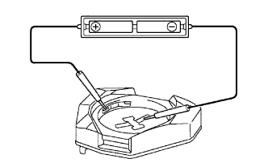
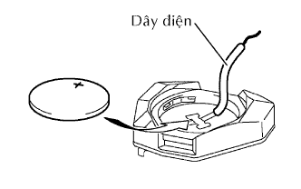

MODULE BỘ ĐIỀU KHIỂN CỬA TỪ XA > KIỂM TRA |
| 1. KIỂM TRA MODULE BỘ ĐIỀU KHIỂN CỬA TỪ XA |
Kiểm tra sự hoạt động của điều khiển từ xa.
Tháo pin (PIN lithium) ra khỏi điều khiển từ xa.
Lắp một pin mới (Pin Lithium).
|  |
Từ bên ngoài xe, cách tay nắm bên ngoài cửa phía người lái xấp xỉ 1 m, hãy thử bộ điều khiển từ xa bằng cách chĩa tấm ghi mã số chìa của nó về xe và ấn nút trên điều khiển từ xa.
Kiểm tra dung tích pin.
Tháo pin (PIN lithium: CR2016) ra khỏi điều khiển từ xa.
|  |
Nối dây điện vào cực âm (-) của điều khiển và lắp pin.
Nối cực duơng (+) của đồng hồ đo vào pin litium: CR2016 và đầu đo âm (-) vào dây điện.
Hãy ấn một trong hai nút LOCK và UNLOCK trên điều khiển từ xa trong một giây.
Hãy ấn nút truyền trên bộ điều khiển một lần nữa để kiểm tra điện áp.